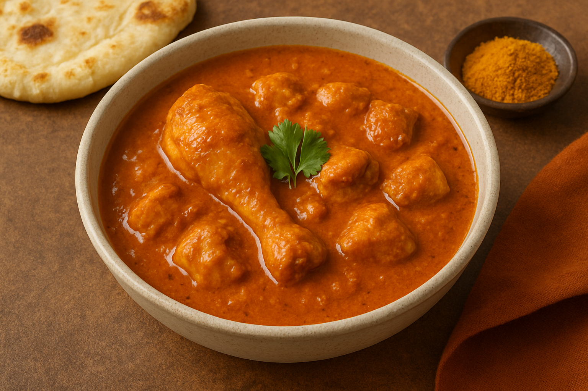

Home
Chicken Curry

Description
Ingredients
- 500g Chicken
- 2 tbsp oil
- 1 large onion, finely chopped
- 2 tomatoes, pureed
- 1 tsp ginger-garlic paste
- 1 tsp cumin seeds
- 1 tsp turmeric powder
- 1 tsp red chili powder
- 1 tsp garam masala
- 1/2 cup yogurt or coconut milk
- Salt to taste
- Fresh cilantro for garnish
Steps
- Cut the chicken into pieces and set aside.
- Heat oil in a pan over medium heat. Add cumin seeds and let them splutter.
- Add chopped onions and sauté until golden brown.
- Add ginger-garlic paste and cook for 2 minutes until fragrant.
- Add pureed tomatoes and cook until the oil separates from the masala.
- Add turmeric powder, red chili powder, and salt. Mix well.
- Add the chicken pieces and cook until they are no longer pink.
- Add yogurt or coconut milk and mix well. Cook for another 10-15 minutes on low heat until the chicken is cooked through.
- Sprinkle garam masala and mix gently.
- Garnish with fresh cilantro and serve hot with rice or naan.